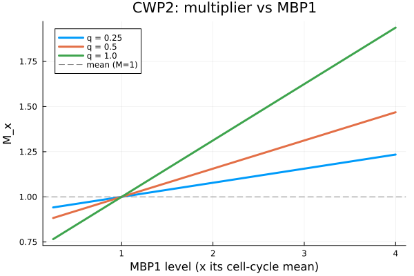

Tutorial — the multiplier, interactively
For a gene $x$, the cell-cycle multiplier rescales its transcription rate without changing the average:
\[M_x(t) = 1 + q_x\,\frac{\sum_i \alpha_i\left(\mathrm{TF}_i(t)/\overline{\mathrm{TF}_i} - 1\right)}{\sum_i |\alpha_i|}.\]
The figure below sweeps the strongest regulator of CWP2 from a quarter to four times its cell-cycle mean, for three values of the weight $q_x$. The curve always crosses $M_x = 1$ at the mean (dashed line) — the mean-preserving guarantee — and $q_x$ scales the amplitude.

Run it interactively
The figure above is one slice. The full Pluto notebook lets you pick any of the 1,027 fitted genes, choose which regulator to sweep, and drag $q_x$ live:
- Notebook:
notebook/multiplier_explorer.jl - Run it: install Pluto (
import Pkg; Pkg.add("Pluto")), thenusing Pluto; Pluto.run()and open the notebook file.
The reported numbers are reproduced by the package's test suite (runtests.jl): $M_x = 1$ at the mean to machine precision, for any mix of activators and repressors and any $q_x$.